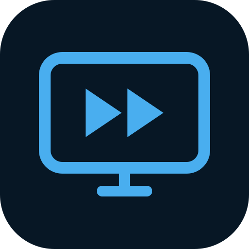

Sal0 BlockYouTube na sua TVVincule o YouTube da sua TV e escolha
os trechos que você quer pular.
Um código para cada TV. Configure uma vez e pronto.
No YouTube da TV, abra Configurações → Vincular com código da TV.
Depois toque em Adicionar TV e informe os 12 números.
Importe seu config.json para aproveitar as TVs e preferências já configuradas. O painel e o motor oficial compartilham essa configuração.
Carregando o estado do serviço…
Registros recentes do container oficial e desta sessão do painel.
Os próximos eventos aparecerão aqui.